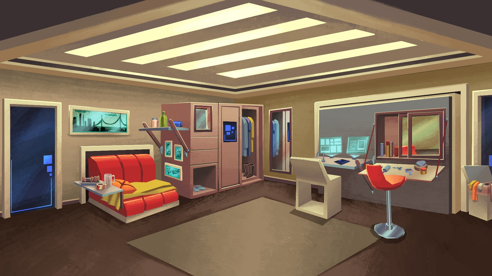
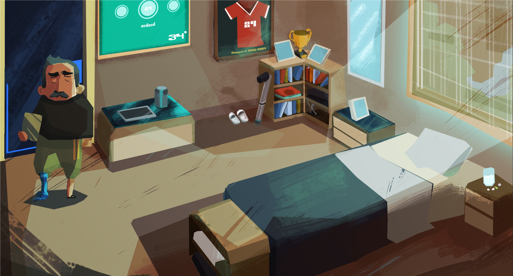
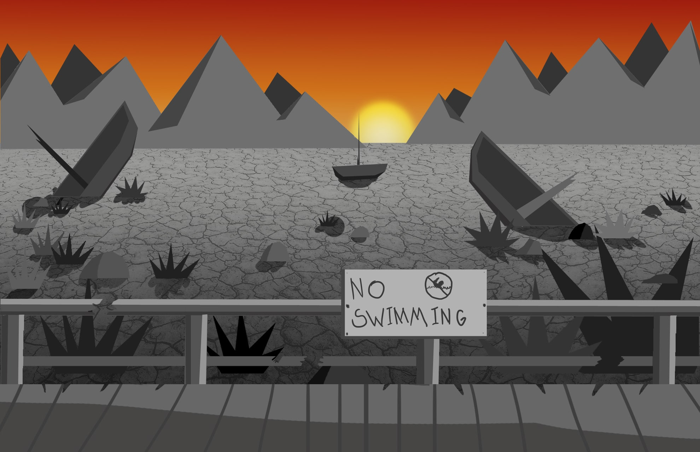

-

Amy
Amy es inocente, curiosa y aventurera. Desde su punto de vista, el planeta no está mejor ni peor que en el pasado, sino que es normal. De su interés en explorar surgió un interés en navegar; le encanta dibujar mapas, tanto de lugares ficticios como reales.
Su sed de aventura la lleva a investigar y buscar pistas donde sea necesario para resolver los acertijos que se le presentan.
-

Ambientación
El juego está ambientado en el año 2050, en un edificio de apartamentos de clase media. Las temperaturas son más intensas y a la vez más erráticas a causa del calentamiento global.
La mayoría de las personas se ha mudado a las ciudades, que han crecido considerablemente. La unidad estándar es el apartamento para hacer frente a una mayor población y un espacio limitado. Estos edificios también incluyen, en su mayoría, una variedad de servicios ya que mucha gente quiere evitar salir al peligroso exterior.
-

Lógica
Explora y encuentra fotos que están por todo el edificio para completar rompecabezas. Habla con la familia de Amy para obtener respuestas y pistas.
-

Mensaje
La visión de un futuro no muy lejano el cual ha sido sometido a cambios drásticos debido al calentamiento global nos lleva a tomar conciencia sobre las acciones que debemos tomar desde ya para dejar un mejor lugar a las generaciones próximas.